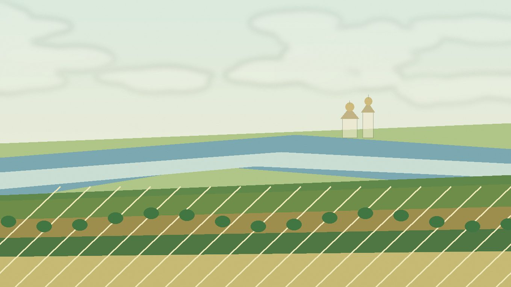

Цветы
и декоративные
Однолетники, многолетники, луковичные, декоративные кустарники, розы, лианы и хвойные для центральной волжской зоны. Вместо механического списка сортов здесь указаны сорта, группы и формы, которые логично выбирать для местного климата.
Разделы зоны
Справочники по типам посадок в этой природной зоне.
Здесь собраны овощи, зелень, бахчевые и культуры для тёплых гряд или теплицы. Для каждой позиции указаны условия, сроки и сортовые ориентиры.
Сад, ягоды и плодовыеСюда вынесены ягодные кустарники, земляника, плодовые деревья, лианы и экспериментальные садовые культуры.
Цветы и декоративные растенияРаздел помогает подобрать цветник, декоративные кустарники, хвойные и растения для тени или влажных мест.
Полезные растения для участкаЗдесь собраны растения для чая, лекарственной грядки, сидерации, опылителей, газона и почвопокровных посадок.
Особенности для цветника
Условия, которые чаще всего влияют на выбор растений, сроки посадки и необходимость укрытия.
Цветы и декоративные растения
Раздел помогает подобрать цветник, декоративные кустарники, хвойные и растения для тени или влажных мест. В раскрывающихся строках указаны не только конкретные сорта, но и подходящие группы, формы и типы посадок.
Популярное
Самые частые и понятные растения для этого раздела.
| Культура | Категория | Рекомендация | Где лучше | Сроки | Комментарий |
|---|
Дополнительные растения
Расширенный список для более точного подбора под участок и условия.
| Культура | Категория | Рекомендация | Где лучше | Сроки | Комментарий |
|---|
По выбранным фильтрам ничего не найдено.